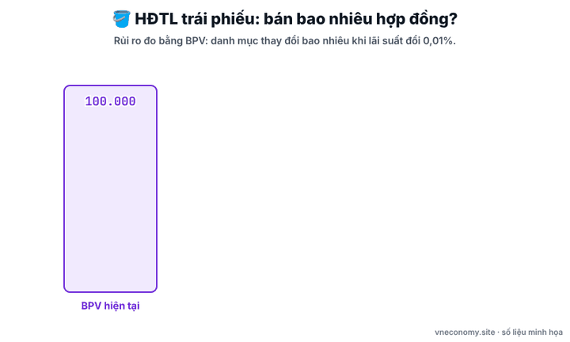
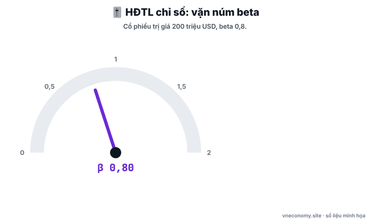
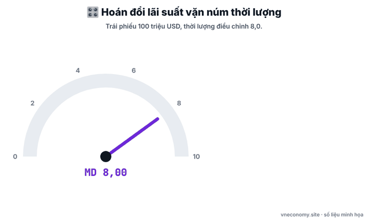
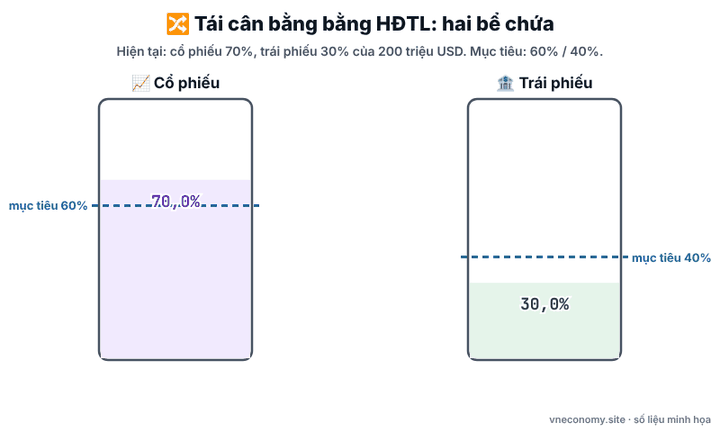
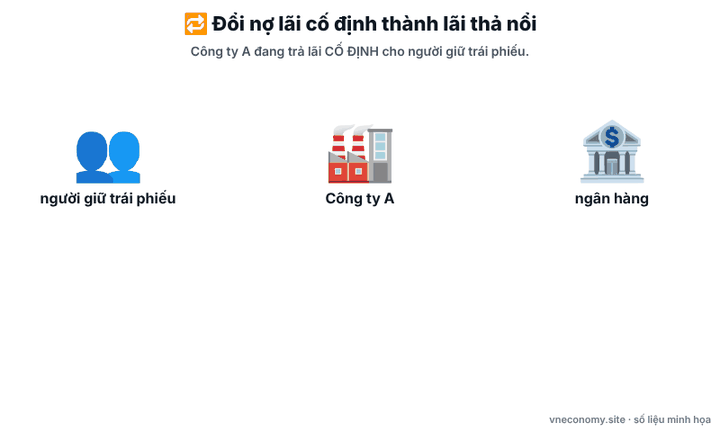
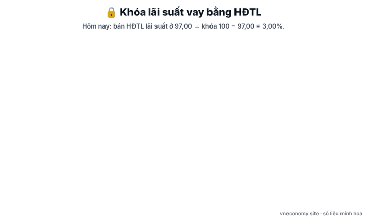
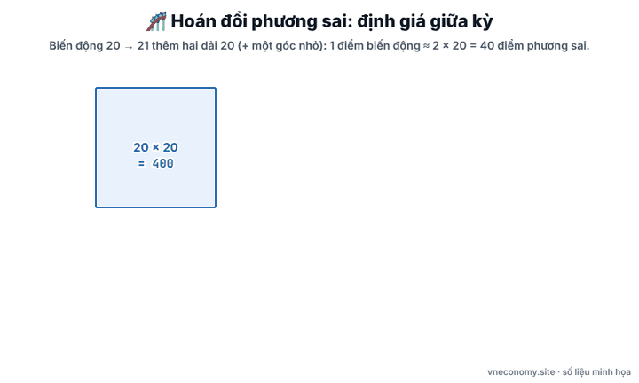

Học CFA · Phái sinh
Hoán đổi, kỳ hạn và hợp đồng tương lai: cơ chế từng bước
Chín đoạn hoạt hình cho thấy phái sinh làm gì với một danh mục: đo rủi ro đang có, chọn mức rủi ro muốn có, rồi dùng hợp đồng để lấp khoảng chênh
Điểm chính
- Một công thức định cỡ: số hợp đồng = (rủi ro muốn có − rủi ro đang có) ÷ rủi ro của một hợp đồng. Kết quả âm thì bán, dương thì mua. Với trái phiếu, rủi ro là BPV; với cổ phiếu là beta × giá trị; với hoán đổi lãi suất là thời lượng.
- Dựng hoán đổi: trả dòng tiền của thứ bạn đang có, nhận dòng tiền của thứ bạn muốn có. Danh nghĩa là phần bạn muốn thay đổi. Hoán đổi tiền tệ đổi gốc lúc đầu và lúc cuối theo cùng một tỷ giá.
- Giá hợp đồng tương lai mang thông tin: lãi suất = 100 − giá; hợp đồng lãi suất quỹ liên bang cho xác suất Fed tăng lãi; ngày đáo hạn giá tương lai phải gặp giá giao ngay (VIX trượt dốc, basis trái phiếu).
Phần tiếp theo của biểu đồ lãi lỗ quyền chọn. Mỗi đoạn chạy khoảng 20 giây rồi dừng 4 giây ở đáp án; bên cạnh là câu hỏi, công thức, đáp án và ý nghĩa của nó. Màu giữ nguyên trong mọi đoạn: tím là thứ bạn đang có, xanh dương là mục tiêu, cam là một hợp đồng, xanh lá là mua hoặc nhận, đỏ là bán hoặc trả.
1 · Định cỡ: cần bao nhiêu hợp đồng
Mọi câu hỏi định cỡ đều đi qua ba bước: đo rủi ro đang có, đo rủi ro muốn có, rồi chia khoảng chênh cho rủi ro của một hợp đồng.
Số hợp đồng = (muốn có − đang có) ÷ một hợp đồng · âm → bán · dương → mua

Câu hỏi
Danh mục trái phiếu có BPV 100.000. Bạn muốn giảm xuống 40.000. Trái phiếu rẻ nhất để giao (CTD) có BPV 90 và hệ số chuyển đổi (CF) 0,75. Giao dịch bao nhiêu HĐTL trái phiếu, mua hay bán?
Công thức
N = (BPV mục tiêu − BPV hiện tại) ÷ (BPV của CTD ÷ CF)
Đáp án
Một hợp đồng = 90 ÷ 0,75 = 120 · N = (40.000 − 100.000) ÷ 120 = −500 → bán 500
Hiểu bản chất
BPV là số tiền danh mục mất khi lãi suất tăng 0,01%. HĐTL trái phiếu đã bán thì lãi khi lãi suất tăng, nên mỗi hợp đồng múc đi 120 rủi ro. Chia cho CF vì một hợp đồng tương đương 1 ÷ CF đơn vị trái phiếu CTD; quên CF sẽ ra 667.

Câu hỏi
Cổ phiếu trị giá 200 triệu USD có beta 0,8, bạn muốn beta 1,1; một HĐTL chỉ số trị giá 50.000 USD, beta 1,0. Sau đó cần đầu tư 4,6 triệu USD tiền mặt nhàn rỗi vào chỉ số (chỉ số 2.000, hệ số nhân 500).
Công thức
N = (β mục tiêu − β hiện tại) ÷ β HĐTL × giá trị ÷ giá trị một HĐ · tiền mặt: N = tiền ÷ (chỉ số × hệ số nhân)
Đáp án
(1,1 − 0,8) ÷ 1,0 × 200 tr ÷ 50.000 = +1.200 → mua 1.200 · 4,6 tr ÷ (2.000 × 500) = 4,6 → mua 5
Hiểu bản chất
Beta là mức danh mục thay đổi khi thị trường thay đổi 1%. Mua HĐTL chỉ số là thêm rủi ro thị trường mà không phải mua cổ phiếu. Tiền mặt có beta 0, nên cổ phiếu hóa tiền mặt là cùng công thức với “hiện tại” = 0.

Câu hỏi
Danh mục trái phiếu 100 triệu USD có thời lượng điều chỉnh 8,0, bạn muốn 6,0. Hoán đổi trả cố định có thời lượng −4,0. Danh nghĩa bao nhiêu, đứng chiều nào?
Công thức
Danh nghĩa = (MD mục tiêu − MD hiện tại) ÷ MD hoán đổi × giá trị
Đáp án
(6,0 − 8,0) ÷ (−4,0) × 100 tr = 50 triệu USD, trả cố định
Hiểu bản chất
Nhận cố định giống như sở hữu trái phiếu, nên tăng thời lượng; trả cố định giống như phát hành trái phiếu, nên giảm thời lượng. Muốn giảm thời lượng thì trả cố định. Hai dấu trừ triệt tiêu nhau nên danh nghĩa ra số dương.

Câu hỏi
Danh mục 200 triệu USD gồm 70% cổ phiếu, 30% trái phiếu; mục tiêu 60/40 mà không bán gì. Beta cổ phiếu 1,2, một HĐTL chỉ số 40.000 USD (beta 1,0). Thời lượng trái phiếu 5,0; BPV của CTD 75, CF 0,75.
Công thức
Phần chuyển = 10% × 200 tr · HĐ chỉ số N = β × phần chuyển ÷ một HĐ · HĐ trái phiếu N = (MD × phần chuyển × 0,0001) ÷ (BPV của CTD ÷ CF)
Đáp án
Phần chuyển = 20 triệu USD · cổ phiếu: 1,2 × 20 tr ÷ 40.000 = 600 → bán 600 · trái phiếu: 5,0 × 20 tr × 0,0001 = 10.000; 10.000 ÷ (75 ÷ 0,75) = 100 → mua 100
Hiểu bản chất
Hợp đồng tương lai chỉ thay đổi phần bạn chuyển. Bán HĐTL chỉ số đưa rủi ro cổ phiếu của 20 triệu đó về 0, nên nó như tiền mặt; rồi mua HĐTL trái phiếu để “tiền mặt” đó mang rủi ro trái phiếu.
2 · Dựng một hoán đổi
Hoán đổi là hai dòng tiền chạy ngược chiều. Chân bạn trả triệt tiêu thứ bạn đang có; chân bạn nhận là thứ bạn muốn có. Câu hỏi thường yêu cầu bốn ô: kỳ hạn, dòng tiền, danh nghĩa và ngày thanh toán.

Câu hỏi
Công ty A trả coupon cố định trên trái phiếu và dự báo lãi suất giảm trong 3 năm tới. Dựng hoán đổi thế nào để trả lãi thả nổi?
Công thức
Trả thứ bạn muốn trả · nhận thứ triệt tiêu khoản bạn đang trả
Đáp án
Nhận cố định, trả thả nổi · kỳ hạn 3 năm · danh nghĩa = gốc trái phiếu · ngày thanh toán = ngày trả coupon
Hiểu bản chất
Khoản cố định nhận từ ngân hàng triệt tiêu khoản cố định trả cho người giữ trái phiếu, chỉ còn lại khoản thả nổi phải trả. Khớp danh nghĩa và ngày thanh toán thì triệt tiêu trọn vẹn.

Câu hỏi
Công ty A vay EUR rẻ ở trong nước nhưng cần USD để xây nhà máy ở Mỹ và muốn trả lãi bằng USD. Mô tả hoán đổi lúc đầu, mỗi kỳ và lúc cuối.
Công thức
Đầu kỳ: giao thứ đã vay, nhận thứ cần dùng · mỗi kỳ: trả lãi bằng đồng tiền đang giữ · cuối kỳ: đảo ngược đầu kỳ theo cùng tỷ giá
Đáp án
Đầu kỳ: trả gốc EUR, nhận gốc USD · mỗi kỳ: trả lãi USD, nhận lãi EUR (chuyển cho bên cho vay EUR) · cuối kỳ: trả gốc USD, nhận lại gốc EUR (để trả khoản vay EUR)
Hiểu bản chất
Hoán đổi tiền tệ là hai khoản cho vay lẫn nhau. Mọi khoản EUR vào từ ngân hàng rồi ra ngay cho bên cho vay EUR, nên thứ còn lại là một khoản vay USD. Cùng một tỷ giá ở hai đầu nên gốc không chịu rủi ro tỷ giá.
3 · Đọc lãi suất từ giá hợp đồng tương lai
Giá hợp đồng lãi suất được yết theo kiểu 100 − lãi suất. Bán hợp đồng hôm nay là khóa lãi suất vay; giá hợp đồng lãi suất quỹ liên bang cho biết thị trường đặt cược bao nhiêu vào một lần tăng lãi.

Câu hỏi
(1) Một người sẽ vay sau 6 tháng và bán HĐTL lãi suất ở 97,00. Sau đó khoản vay tốn 3,80%, HĐTL còn 96,20: lãi suất thực là bao nhiêu? (2) HĐTL lãi suất Fed giao dịch ở 96,20, biên độ mục tiêu 3,50–3,75%: xác suất tăng 0,25% là bao nhiêu?
Công thức
Lãi suất = 100 − giá · lãi suất thực = lãi vay − lãi HĐTL · P(tăng) = (ngụ ý − giữa hiện tại) ÷ (giữa sau khi tăng − giữa hiện tại)
Đáp án
(1) Lãi 97,00 − 96,20 = 0,80; 3,80% − 0,80% = 3,00%, đúng mức 100 − 97,00 đã khóa · (2) ngụ ý 3,80%; giữa hiện tại 3,625%; giữa sau khi tăng 3,875%; 0,175 ÷ 0,25 = 70%
Hiểu bản chất
Giá HĐTL giảm khi lãi suất tăng, nên người đi vay bán chúng và khoản lãi bù cho khoản vay đắt hơn. Lãi suất ngụ ý là bình quân có trọng số của “giữ nguyên” và “tăng”, nên vị trí của nó giữa hai mức chính là xác suất.
4 · Biến động và sự hội tụ
Hoán đổi phương sai trả theo bình phương biến động, nên một điểm biến động đáng khoảng 2 × giá thực hiện điểm phương sai. Hợp đồng tương lai phải bằng giá giao ngay vào ngày đáo hạn: đó là nguồn lợi nhuận của giao dịch trượt dốc VIX và giao dịch basis trái phiếu.

Câu hỏi
Bạn mua hoán đổi phương sai 1 năm: danh nghĩa vega 2.000.000 USD, giá thực hiện 20. Sau 4 tháng biến động thực tế là 25, giá thực hiện hợp lý cho 8 tháng còn lại là 22, lãi suất 3%. Giá trị hiện tại?
Công thức
N_var = vega ÷ (2 × K) · PS kỳ vọng = t/T × thực tế² + (T−t)/T × ngụ ý² · giá trị = N_var × (PS kỳ vọng − K²) ÷ (1 + r × (T−t)/T)
Đáp án
N_var = 2.000.000 ÷ 40 = 50.000 · PS kỳ vọng = 4/12 × 625 + 8/12 × 484 = 531 · 50.000 × (531 − 400) = 6.550.000 · ÷ 1,02 = 6.421.569 USD (người mua có lãi)
Hiểu bản chất
Hoán đổi trả theo bình phương biến động. Từ 20 lên 21 thêm khoảng hai dải 20 vào hình vuông, nên 1 điểm biến động ≈ 2 × 20 điểm phương sai: đó là 2K. Viết biến động là 20, không phải 0,20, nếu không kết quả nhỏ đi 10.000 lần.

Câu hỏi
(1) VIX giao ngay 16,0, HĐTL tháng gần 17,0, tháng thứ hai 18,5, đường giữ nguyên hình dạng: giao dịch nào lãi nhờ trượt dốc? (2) Trái phiếu giá 104, giá HĐTL × CF = 101: giao dịch basis là gì?
Công thức
Ngày đáo hạn, HĐTL = giao ngay · basis = giá trái phiếu − giá HĐTL × CF
Đáp án
(1) Mua tháng gần, bán tháng thứ hai: +1,5 − 1,0 = +0,5 (không mua được VIX giao ngay) · (2) basis = +3 → bán trái phiếu, mua HĐTL; hai giá gặp nhau ngày giao hàng, thu 3
Hiểu bản chất
Giá HĐTL phải bằng giá giao ngay khi đáo hạn. Trên đường dốc lên, mỗi hợp đồng trượt xuống khi gần đáo hạn, nên bán hợp đồng xa ăn được phần trượt. Basis dương nghĩa là trái phiếu đắt so với HĐTL, và khoảng chênh phải đóng lại trước ngày giao hàng.
Phương pháp và nguồn
Mọi con số là ví dụ minh họa, không phải giá thị trường. Các công thức dùng trong các đoạn:
- BPV = thời lượng điều chỉnh × giá trị × 0,0001 · một HĐTL trái phiếu ≈ BPV trái phiếu rẻ nhất để giao (CTD) ÷ hệ số chuyển đổi (CF).
- HĐTL chỉ số: N = (beta mục tiêu − beta hiện tại) ÷ beta hợp đồng × giá trị danh mục ÷ giá trị một hợp đồng.
- Hoán đổi lãi suất: danh nghĩa = (thời lượng mục tiêu − thời lượng hiện tại) ÷ thời lượng của hoán đổi × giá trị danh mục.
- Lãi suất = 100 − giá · P(tăng) = (lãi suất ngụ ý − mức hiện tại) ÷ (mức sau khi tăng − mức hiện tại).
- Danh nghĩa phương sai = danh nghĩa vega ÷ (2 × giá thực hiện) · giá trị = danh nghĩa phương sai × (phương sai kỳ vọng − giá thực hiện²) × hệ số chiết khấu. Biến động viết bằng số điểm (20, không phải 0,20).
Tài liệu học tập cá nhân, không phải khuyến nghị đầu tư.